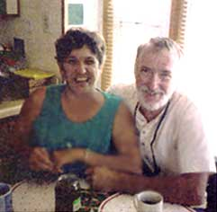
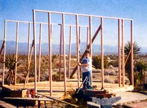
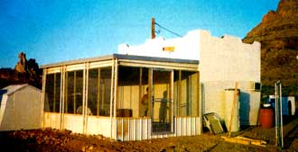

Retiring Pioneers
December/January 2001
By Duane Mark
Golden Valley, Arizona
My wife Dee and I realized a few years ago that if we wanted to live the way we were accustomed after we retired, we'd need a lot more money or a lot fewer living expenses.
We have both been self-employed most of our lives and, contrary to popular belief, not all business people are wealthy. Our retirement income will be very low. With the realization that we would be trapped by our monetary situation if we didn't do something prior to our retirement, we began to develop a plan.
Since the late 1970s, I have followed the evolution of solar energy and straw-bale construction, as well as other energy-efficient methods, so our plan centered around building a home that would be low-cost to build and maintain.
We wanted a place away from the beaten path, but not so far away that a trip to town would be a major undertaking. We selected 2 1/2 acres 20 miles west of Kingman, Ariz., on the eastern slope of the Black Mountains. The view is spectacular in all directions, with wonderful sunrises and the mountains to the west for early afternoon shade. The 2 1/2 acres will allow plenty of room for a straw-bale home, a large workshop and a garden.
Although we've been planning for years, only in the last year have we begun to fulfill our dream. For the sake of saving someone else making the same mistake we made, I will tell you how we began and then had to backtrack.
We bought an old, single-wide mobile home for $600 to live in while we built our house. We tore out the inside and made it all new - kitchen, two bathrooms, new plumbing, new wiring and a bay window in the kitchen. It was beautiful.
When we asked Mohave County about moving it onto the property, we were told the law had just changed and we could not put it on the property. Even though everything was new in it, the country said the mobile home was too old. No exceptions. So here's a tip: If you plan to use a mobile home, check with officials in your area first. Ask about size, age and various restrictions before you make any investment. Fortunately we were able to sell the mobile home for a nice profit and changed our plan accordingly.
Changing one's lifestyle without creating a large debt requires a lot of work and sacrifice. We are willing to give up some convenience and comfort in order to reach this important goal.
Since we knew we were not going to have much room in the mobile home, we had built a 12x16 storage building on the property some weeks previously and had camped in it while working on the property. We decided to turn the shed into living quarters rather than buy another trailer and remodel again. This meant building more storage space, but it would make more money available for building. We eventually may use this small house for a rental or a guest house.
SCROUNGING MAKES A DIFFERENCE
Construction costs have been minimal on the storage building. I've been stockpiling materials for some time and buying every bargain I could find from salvage companies, yard sales and through newspaper ads. You'd be surprised at how much is available free or through trade, often just for the labor of taking something off someone's property. I obtained a stack of 16 2x12s, 17 feet long, in exchange for tearing a patio cover down; a pair of solar panels for heating water were free in exchange for removing them from a roof. I purchased a complete solar hot water system for a fraction of its value through an ad in the newspaper. The roof and floor joists are made from industrial grade 12x14s cut down from 20-foot lengths. The whole stack of 18 cost me $108. I purchased a stack of plywood and roofing for under $300. All the insulation (12-inch in the roof and 4-inch in the side walls) of the mini-house, came to $50. Total cost of our temporary home, including two yard-sale doors and one yard-sale window, one new window, two rolls of 3-foot screen and $112 worth of 2x4s: $675.
A carpenter for 40 years, I like some of the old lumber better than the new stuff. it hasn't been out in the weather, it's very strong and usable, already seasoned and unlikely to bend or warp. In today's market, unless you pay top dollar for kiln-dried lumber, the wood will twist and bend even after it's in place.
We've added a 12x16 screened porch or patio on the back and have begun a 12x21 addition for a kitchen, utility room and bathroom. Our bathroom facilities so far have consisted of a rented portable toilet. Until our outdoor shower was completed (which consists of a 150 gallon water tank with a shower nozzle), sponge baths were all we had.
Dee retired last year, but I have two years to go. By then we will have the straw-bale house built, and our main expense will be a small land payment. Two years after I retire, the land will be completely paid off.
Costs for electricity, heating and cooling will be the cost of maintaining the solar systems. One system is for hot water and one will heat the house through tubing in the floor. Cooling will be provided by underground pipes feeding air through vents in the floor and exiting through vents in the top of the walls.
We are connected to the power grid now and will stay connected even after the photovoltaic panels and wind generator take over, so we can get a check from the power company for our extra power.
Changing one's lifestyle without creating a large debt requires a lot of work and sacrifice. We are willing to give up some convenience and comfort in order to reach this important goal.
I'm afraid Dee has taken the worst of it, though. She has cooked with a microwave and on a camp stove for months. Until the kitchen is finished, she will not have a range.
Contact Duane and Dee Mark by email at: ddranch24@citlink.net
We welcome your firsthand accounts of living lightly on the planet. We'll pay $100 if your Report from the Field is used inMother Earth News.Please submit your report with photos to Cheryl Long Editor,MOTHER EARTHNEWS, 1503SW 42nd St.; Topeka, KS 66609.-MOTHER
|
 Energy self-sufficiency, low-cost maintenance and do-it-yourself home building form the core of Arizona residents Dee and Duane Mark's retirement strategy. |
 Dee and Duane wanted to be off - but not too far off - the beaten path, and this land west of Kingman, Ariz., fit the bill. |
 All the insulation for the mini-house cost Dee and Duane a mere $50 |
|
 By scrounging, trading and salvaging materials, Dee and Duane saved a bundle. This temporary house, where they'll live while building their straw-bale home, cost $675. |
|
|